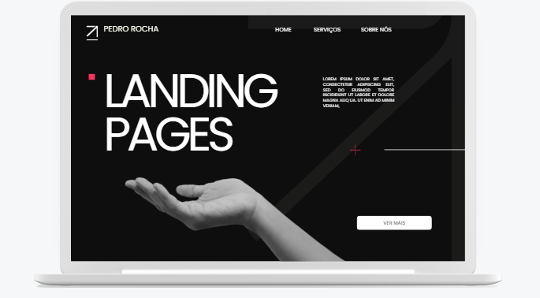

Desenvolvedor especializado em criar soluções inovadoras e eficientes, transformo ideias em realidade digital.

Ecommerce Web: Tecnologias utilizadas: Html, Css, Javascript

Landing Page: Tecnologias utilizadas, Html, Css & Javascript

Site institucional: Tecnologias utilizadas: Figma, Canva, Html, Css & Javascript

Criação de sites institucionais modernos e profissionais, focados em proporcionar uma presença digital sólida para sua empresa ou negócio. Utilizo HTML, CSS e JavaScript para garantir sites rápidos, responsivos e fáceis de usar.
Benefícios: Aumenta a visibilidade online, melhora a credibilidade da marca e facilita a comunicação com seus clientes.
Desenvolvimento de landing pages otimizadas para conversão, ideal para campanhas de marketing digital e geração de leads. Layouts simples e diretos, com foco em destacar sua oferta e facilitar a tomada de decisão.
Benefícios: Aumenta a taxa de conversão e gera leads qualificados, além de ser uma excelente ferramenta para campanhas de anúncios.
Criação de sites completamente personalizados de acordo com as necessidades específicas do cliente. Eu desenvolvo interfaces únicas que proporcionam uma experiência de usuário sob medida.
Benefícios: A solução ideal para quem busca um site exclusivo, alinhado com a identidade da sua marca e com funcionalidades específicas para seu negócio.
Criação de bots de automação para WhatsApp, capazes de gerenciar atendimento automático, envio de mensagens programadas e interação com clientes de forma rápida e eficiente.
Benefícios: Automatiza o atendimento ao cliente, economiza tempo e melhora a eficiência no relacionamento com seus clientes.